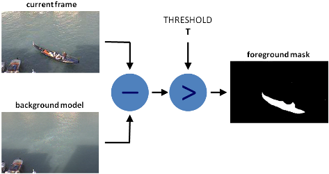
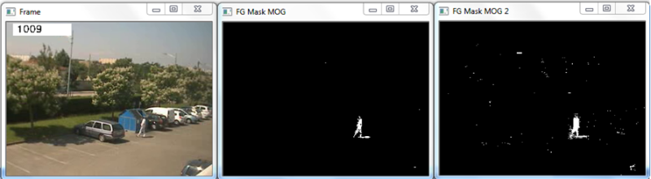

Background subtraction (BS) is a common and widely used technique for generating a foreground mask (namely, a binary image containing the pixels belonging to moving objects in the scene) by using static cameras.
As the name suggests, BS calculates the foreground mask performing a subtraction between the current frame and a background model, containing the static part of the scene or, more in general, everything that can be considered as background given the characteristics of the observed scene.
Background modeling consists of two main steps:
In the first step, an initial model of the background is computed, while in the second step that model is updated in order to adapt to possible changes in the scene.
In this tutorial we will learn how to perform BS by using OpenCV. As input, we will use data coming from the publicly available data set Background Models Challenge (BMC) .
In this tutorial you will learn how to:
- Read data from videos by using VideoCapture or image sequences by using imread;
- Create and update the background model by using BackgroundSubtractor class;
- Get and show the foreground mask by using imshow;
- Save the output by using imwrite to quantitatively evaluate the results.
In the following you can find the source code. We will let the user chose to process either a video file or a sequence of images.
The results as well as the input data are shown on the screen.
//opencv
#include <opencv2/highgui/highgui.hpp>
#include <opencv2/video/background_segm.hpp>
//C
#include <stdio.h>
//C++
#include <iostream>
#include <sstream>
using namespace cv;
using namespace std;
//global variables
Mat frame; //current frame
Mat fgMaskMOG; //fg mask generated by MOG method
Mat fgMaskMOG2; //fg mask fg mask generated by MOG2 method
Ptr<BackgroundSubtractor> pMOG; //MOG Background subtractor
Ptr<BackgroundSubtractor> pMOG2; //MOG2 Background subtractor
int keyboard;
//function declarations
void help();
void processVideo(char* videoFilename);
void processImages(char* firstFrameFilename);
void help()
{
cout
<< "--------------------------------------------------------------------------" << endl
<< "This program shows how to use background subtraction methods provided by " << endl
<< " OpenCV. You can process both videos (-vid) and images (-img)." << endl
<< endl
<< "Usage:" << endl
<< "./bs {-vid <video filename>|-img <image filename>}" << endl
<< "for example: ./bs -vid video.avi" << endl
<< "or: ./bs -img /data/images/1.png" << endl
<< "--------------------------------------------------------------------------" << endl
<< endl;
}
int main(int argc, char* argv[])
{
//print help information
help();
//check for the input parameter correctness
if(argc != 3) {
cerr <<"Incorret input list" << endl;
cerr <<"exiting..." << endl;
return EXIT_FAILURE;
}
//create GUI windows
namedWindow("Frame");
namedWindow("FG Mask MOG");
namedWindow("FG Mask MOG 2");
//create Background Subtractor objects
pMOG = createBackgroundSubtractorMOG(); //MOG approach
pMOG2 = createBackgroundSubtractorMOG2(); //MOG2 approach
if(strcmp(argv[1], "-vid") == 0) {
//input data coming from a video
processVideo(argv[2]);
}
else if(strcmp(argv[1], "-img") == 0) {
//input data coming from a sequence of images
processImages(argv[2]);
}
else {
//error in reading input parameters
cerr <<"Please, check the input parameters." << endl;
cerr <<"Exiting..." << endl;
return EXIT_FAILURE;
}
//destroy GUI windows
destroyAllWindows();
return EXIT_SUCCESS;
}
void processVideo(char* videoFilename) {
//create the capture object
VideoCapture capture(videoFilename);
if(!capture.isOpened()){
//error in opening the video input
cerr << "Unable to open video file: " << videoFilename << endl;
exit(EXIT_FAILURE);
}
//read input data. ESC or 'q' for quitting
while( (char)keyboard != 'q' && (char)keyboard != 27 ){
//read the current frame
if(!capture.read(frame)) {
cerr << "Unable to read next frame." << endl;
cerr << "Exiting..." << endl;
exit(EXIT_FAILURE);
}
//update the background model
pMOG->apply(frame, fgMaskMOG);
pMOG2->apply(frame, fgMaskMOG2);
//get the frame number and write it on the current frame
stringstream ss;
rectangle(frame, cv::Point(10, 2), cv::Point(100,20),
cv::Scalar(255,255,255), -1);
ss << capture.get(CAP_PROP_POS_FRAMES);
string frameNumberString = ss.str();
putText(frame, frameNumberString.c_str(), cv::Point(15, 15),
FONT_HERSHEY_SIMPLEX, 0.5 , cv::Scalar(0,0,0));
//show the current frame and the fg masks
imshow("Frame", frame);
imshow("FG Mask MOG", fgMaskMOG);
imshow("FG Mask MOG 2", fgMaskMOG2);
//get the input from the keyboard
keyboard = waitKey( 30 );
}
//delete capture object
capture.release();
}
void processImages(char* fistFrameFilename) {
//read the first file of the sequence
frame = imread(fistFrameFilename);
if(!frame.data){
//error in opening the first image
cerr << "Unable to open first image frame: " << fistFrameFilename << endl;
exit(EXIT_FAILURE);
}
//current image filename
string fn(fistFrameFilename);
//read input data. ESC or 'q' for quitting
while( (char)keyboard != 'q' && (char)keyboard != 27 ){
//update the background model
pMOG->apply(frame, fgMaskMOG);
pMOG2->apply(frame, fgMaskMOG2);
//get the frame number and write it on the current frame
size_t index = fn.find_last_of("/");
if(index == string::npos) {
index = fn.find_last_of("\\");
}
size_t index2 = fn.find_last_of(".");
string prefix = fn.substr(0,index+1);
string suffix = fn.substr(index2);
string frameNumberString = fn.substr(index+1, index2-index-1);
istringstream iss(frameNumberString);
int frameNumber = 0;
iss >> frameNumber;
rectangle(frame, cv::Point(10, 2), cv::Point(100,20),
cv::Scalar(255,255,255), -1);
putText(frame, frameNumberString.c_str(), cv::Point(15, 15),
FONT_HERSHEY_SIMPLEX, 0.5 , cv::Scalar(0,0,0));
//show the current frame and the fg masks
imshow("Frame", frame);
imshow("FG Mask MOG", fgMaskMOG);
imshow("FG Mask MOG 2", fgMaskMOG2);
//get the input from the keyboard
keyboard = waitKey( 30 );
//search for the next image in the sequence
ostringstream oss;
oss << (frameNumber + 1);
string nextFrameNumberString = oss.str();
string nextFrameFilename = prefix + nextFrameNumberString + suffix;
//read the next frame
frame = imread(nextFrameFilename);
if(!frame.data){
//error in opening the next image in the sequence
cerr << "Unable to open image frame: " << nextFrameFilename << endl;
exit(EXIT_FAILURE);
}
//update the path of the current frame
fn.assign(nextFrameFilename);
}
}
We discuss the main parts of the above code:
First, three Mat objects are allocated to store the current frame and two foreground masks, obtained by using two different BS algorithms.
Mat frame; //current frame
Mat fgMaskMOG; //fg mask generated by MOG method
Mat fgMaskMOG2; //fg mask fg mask generated by MOG2 method
Two BackgroundSubtractor objects will be used to generate the foreground masks. In this example, default parameters are used, but it is also possible to declare specific parameters in the create function.
Ptr<BackgroundSubtractor> pMOG; //MOG Background subtractor
Ptr<BackgroundSubtractor> pMOG2; //MOG2 Background subtractor
...
//create Background Subtractor objects
pMOG = createBackgroundSubtractorMOG(); //MOG approach
pMOG2 = createBackgroundSubtractorMOG2(); //MOG2 approach
The command line arguments are analysed. The user can chose between two options:
if(strcmp(argv[1], "-vid") == 0) {
//input data coming from a video
processVideo(argv[2]);
}
else if(strcmp(argv[1], "-img") == 0) {
//input data coming from a sequence of images
processImages(argv[2]);
}
Suppose you want to process a video file. The video is read until the end is reached or the user presses the button ‘q’ or the button ‘ESC’.
while( (char)keyboard != 'q' && (char)keyboard != 27 ){
//read the current frame
if(!capture.read(frame)) {
cerr << "Unable to read next frame." << endl;
cerr << "Exiting..." << endl;
exit(EXIT_FAILURE);
}
Every frame is used both for calculating the foreground mask and for updating the background. If you want to change the learning rate used for updating the background model, it is possible to set a specific learning rate by passing a third parameter to the ‘apply’ method.
//update the background model
pMOG->apply(frame, fgMaskMOG);
pMOG2->apply(frame, fgMaskMOG2);
The current frame number can be extracted from the VideoCapture object and stamped in the top left corner of the current frame. A white rectangle is used to highlight the black colored frame number.
//get the frame number and write it on the current frame
stringstream ss;
rectangle(frame, cv::Point(10, 2), cv::Point(100,20),
cv::Scalar(255,255,255), -1);
ss << capture.get(CAP_PROP_POS_FRAMES);
string frameNumberString = ss.str();
putText(frame, frameNumberString.c_str(), cv::Point(15, 15),
FONT_HERSHEY_SIMPLEX, 0.5 , cv::Scalar(0,0,0));
We are ready to show the current input frame and the results.
//show the current frame and the fg masks
imshow("Frame", frame);
imshow("FG Mask MOG", fgMaskMOG);
imshow("FG Mask MOG 2", fgMaskMOG2);
The same operations listed above can be performed using a sequence of images as input. The processImage function is called and, instead of using a VideoCapture object, the images are read by using imread, after individuating the correct path for the next frame to read.
//read the first file of the sequence
frame = imread(fistFrameFilename);
if(!frame.data){
//error in opening the first image
cerr << "Unable to open first image frame: " << fistFrameFilename << endl;
exit(EXIT_FAILURE);
}
...
//search for the next image in the sequence
ostringstream oss;
oss << (frameNumber + 1);
string nextFrameNumberString = oss.str();
string nextFrameFilename = prefix + nextFrameNumberString + suffix;
//read the next frame
frame = imread(nextFrameFilename);
if(!frame.data){
//error in opening the next image in the sequence
cerr << "Unable to open image frame: " << nextFrameFilename << endl;
exit(EXIT_FAILURE);
}
//update the path of the current frame
fn.assign(nextFrameFilename);
Note that this example works only on image sequences in which the filename format is <n>.png, where n is the frame number (e.g., 7.png).
Given the following input parameters:
-vid Video_001.avi
The output of the program will look as the following:
The video file Video_001.avi is part of the Background Models Challenge (BMC) data set and it can be downloaded from the following link Video_001 (about 32 MB).
If you want to process a sequence of images, then the ‘-img’ option has to be chosen:
-img 111_png/input/1.png
The output of the program will look as the following:

The sequence of images used in this example is part of the Background Models Challenge (BMC) dataset and it can be downloaded from the following link sequence 111 (about 708 MB). Please, note that this example works only on sequences in which the filename format is <n>.png, where n is the frame number (e.g., 7.png).
To quantitatively evaluate the results obtained, we need to:
In order to save the output images, we can use imwrite. Adding the following code allows for saving the foreground masks.
string imageToSave = "output_MOG_" + frameNumberString + ".png"; bool saved = imwrite(imageToSave, fgMaskMOG); if(!saved) { cerr << "Unable to save " << imageToSave << endl; }
Once we have collected the result images, we can compare them with the ground truth data. There exist several publicly available sequences for background subtraction that come with ground truth data. If you decide to use the Background Models Challenge (BMC), then the result images can be used as input for the BMC Wizard. The wizard can compute different measures about the accuracy of the results.